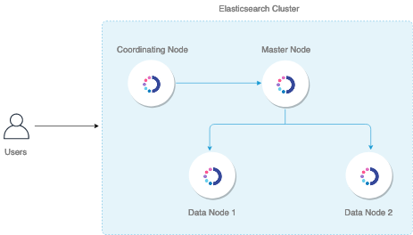

Cluster formation
Before diving into Elasticsearch and searching and aggregating data, you first need to create an Elasticsearch cluster.
Elasticsearch can operate as a single-node or multi-node cluster. The steps to configure both are, in general, quite similar. This page demonstrates how to create and configure a multi-node cluster, but with only a few minor adjustments, you can follow the same steps to create a single-node cluster.
To create and deploy an Elasticsearch cluster according to your requirements, it’s important to understand how node discovery and cluster formation work and what settings govern them.
There are many ways that you can design a cluster. The following illustration shows a basic architecture.

This is a four-node cluster that has one dedicated master node, one dedicated coordinating node, and two data nodes that are master-eligible and also used for ingesting data.
The following table provides brief descriptions of the node types.
| Node type | Description | Best practices for production |
|---|---|---|
Master | Manages the overall operation of a cluster and keeps track of the cluster state. This includes creating and deleting indices, keeping track of the nodes that join and leave the cluster, checking the health of each node in the cluster (by running ping requests), and allocating shards to nodes. | Three dedicated master nodes in three different zones is the right approach for almost all production use cases. This makes sure your cluster never loses quorum. Two nodes will be idle for most of the time except when one node goes down or needs some maintenance. |
Master-eligible | Elects one node among them as the master node through a voting process. | For production clusters, make sure you have dedicated master nodes. The way to achieve a dedicated node type is to mark all other node types as false. In this case, you have to mark all the other nodes as not master-eligible. |
Data | Stores and searches data. Performs all data-related operations (indexing, searching, aggregating) on local shards. These are the worker nodes of your cluster and need more disk space than any other node type. | As you add data nodes, keep them balanced between zones. For example, if you have three zones, add data nodes in multiples of three, one for each zone. We recommend using storage and RAM-heavy nodes. |
Ingest | Preprocesses data before storing it in the cluster. Runs an ingest pipeline that transforms your data before adding it to an index. | If you plan to ingest a lot of data and run complex ingest pipelines, we recommend you use dedicated ingest nodes. You can also optionally offload your indexing from the data nodes so that your data nodes are used exclusively for searching and aggregating. |
Coordinating | Delegates client requests to the shards on the data nodes, collects and aggregates the results into one final result, and sends this result back to the client. | A couple of dedicated coordinating-only nodes is appropriate to prevent bottlenecks for search-heavy workloads. We recommend using CPUs with as many cores as you can. |
By default, each node is a master-eligible, data, ingest, and coordinating node. Deciding on the number of nodes, assigning node types, and choosing the hardware for each node type depends on your use case. You must take into account factors like the amount of time you want to hold on to your data, the average size of your documents, your typical workload (indexing, searches, aggregations), your expected price-performance ratio, your risk tolerance, and so on.
After you assess all these requirements, we recommend you use a benchmark testing tool like Rally to provision a small sample cluster and run tests with varying workloads and configurations. Compare and analyze the system and query metrics for these tests to design an optimum architecture. To get started with Rally, see the Rally documentation.
This page demonstrates how to work with the different node types. It assumes that you have a four-node cluster similar to the preceding illustration.
Prerequisites
Before you get started, you must install and configure Elasticsearch on all of your nodes. For information about the available options, see Install and Configure.
After you are done, use SSH to connect to each node, and then open the config/elasticsearch.yml file.
You can set all configurations for your cluster in this file.
Step 1: Name a cluster
Specify a unique name for the cluster. If you don’t specify a cluster name, it’s set to elasticsearch by default. Setting a descriptive cluster name is important, especially if you want to run multiple clusters inside a single network.
To specify the cluster name, change the following line:
#cluster.name: my-application
to
cluster.name: odfe-cluster
Make the same change on all the nodes to make sure that they’ll join to form a cluster.
Step 2: Set node attributes for each node in a cluster
After you name the cluster, set node attributes for each node in your cluster.
Master node
Give your master node a name. If you don’t specify a name, Elasticsearch assigns a machine-generated name that makes the node difficult to monitor and troubleshoot.
node.name: odfe-master
You can also explicitly specify that this node is a master node. This is already true by default, but adding it makes it easier to identify the master node:
node.master: true
Then make the node a dedicated master that won’t perform double-duty as a data node:
node.data: false
Specify that this node will not be used for ingesting data:
node.ingest: false
Data nodes
Change the name of two nodes to odfe-d1 and odfe-d2, respectively:
node.name: odfe-d1
node.name: odfe-d2
You can make them master-eligible data nodes that will also be used for ingesting data:
node.master: true
node.data: true
node.ingest: true
You can also specify any other attributes that you’d like to set for the data nodes.
Coordinating node
Change the name of the coordinating node to odfe-c1:
node.name: odfe-c1
Every node is a coordinating node by default, so to make this node a dedicated coordinating node, set node.master, node.data, and node.ingest to false:
node.master: false
node.data: false
node.ingest: false
Step 3: Bind a cluster to specific IP addresses
network_host defines the IP address that’s used to bind the node. By default, Elasticsearch listens on a local host, which limits the cluster to a single node. You can also use _local_ and _site_ to bind to any loopback or site-local address, whether IPv4 or IPv6:
network.host: [_local_, _site_]
To form a multi-node cluster, specify the IP address of the node:
network.host: <IP address of the node>
Make sure to configure these settings on all of your nodes.
Step 4: Configure discovery hosts for a cluster
Now that you’ve configured the network hosts, you need to configure the discovery hosts.
Zen Discovery is the built-in, default mechanism that uses unicast to find other nodes in the cluster.
You can generally just add all of your master-eligible nodes to the discovery.seed_hosts array. When a node starts up, it finds the other master-eligible nodes, determines which one is the master, and asks to join the cluster.
For example, for odfe-master the line looks something like this:
discovery.seed_hosts: ["<private IP of odfe-d1>", "<private IP of odfe-d2>", "<private IP of odfe-c1>"]
Step 5: Start the cluster
After you set the configurations, start Elasticsearch on all nodes.
sudo systemctl start elasticsearch.service
Then go to the logs file to see the formation of the cluster:
less /var/log/elasticsearch/odfe-cluster.log
Perform the following _cat query on any node to see all the nodes formed as a cluster:
curl -XGET https://<private-ip>:9200/_cat/nodes?v -u admin:admin --insecure
ip heap.percent ram.percent cpu load_1m load_5m load_15m node.role master name
x.x.x.x 13 61 0 0.02 0.04 0.05 mi * odfe-master
x.x.x.x 16 60 0 0.06 0.05 0.05 md - odfe-d1
x.x.x.x 34 38 0 0.12 0.07 0.06 md - odfe-d2
x.x.x.x 23 38 0 0.12 0.07 0.06 md - odfe-c1
To better understand and monitor your cluster, use the cat API.
(Advanced) Step 6: Configure shard allocation awareness or forced awareness
If your nodes are spread across several geographical zones, you can configure shard allocation awareness to allocate all replica shards to a zone that’s different from their primary shard.
With shard allocation awareness, if the nodes in one of your zones fail, you can be assured that your replica shards are spread across your other zones. It adds a layer of fault tolerance to ensure your data survives a zone failure beyond just individual node failures.
To configure shard allocation awareness, add zone attributes to odfe-d1 and odfe-d2, respectively:
node.attr.zone: zoneA
node.attr.zone: zoneB
Update the cluster settings:
PUT _cluster/settings
{
"persistent": {
"cluster.routing.allocation.awareness.attributes": "zone"
}
}
You can either use persistent or transient settings. We recommend the persistent setting because it persists through a cluster reboot. Transient settings do not persist through a cluster reboot.
Shard allocation awareness attempts to separate primary and replica shards across multiple zones. But, if only one zone is available (such as after a zone failure), Elasticsearch allocates replica shards to the only remaining zone.
Another option is to require that primary and replica shards are never allocated to the same zone. This is called forced awareness.
To configure forced awareness, specify all the possible values for your zone attributes:
PUT _cluster/settings
{
"persistent": {
"cluster.routing.allocation.awareness.attributes": "zone",
"cluster.routing.allocation.awareness.force.zone.values":["zoneA", "zoneB"]
}
}
Now, if a data node fails, forced awareness does not allocate the replicas to a node in the same zone. Instead, the cluster enters a yellow state and only allocates the replicas when nodes in another zone come online.
In our two-zone architecture, we can use allocation awareness if odfe-d1 and odfe-d2 are less than 50% utilized, so that each of them have the storage capacity to allocate replicas in the same zone. If that is not the case, and odfe-d1 and odfe-d2 do not have the capacity to contain all primary and replica shards, we can use forced awareness. This approach helps to make sure that, in the event of a failure, Elasticsearch doesn’t overload your last remaining zone and lock up your cluster due to lack of storage.
Choosing allocation awareness or forced awareness depends on how much space you might need in each zone to balance your primary and replica shards.
(Advanced) Step 7: Set up a hot-warm architecture
You can design a hot-warm architecture where you first index your data to hot nodes—fast and expensive—and after a certain period of time move them to warm nodes—slow and cheap.
If you analyze time series data that you rarely update and want the older data to go onto cheaper storage, this architecture can be a good fit.
This architecture helps save money on storage costs. Rather than increasing the number of hot nodes and using fast, expensive storage, you can add warm nodes for data that you don’t access as frequently.
To configure a hot-warm storage architecture, add temp attributes to odfe-d1 and odfe-d2, respectively:
node.attr.temp: hot
node.attr.temp: warm
You can set the attribute name and value to whatever you want as long as it’s consistent for all your hot and warm nodes.
To add an index newindex to the hot node:
PUT newindex
{
"settings": {
"index.routing.allocation.require.temp": "hot"
}
}
Take a look at the following shard allocation for newindex:
GET _cat/shards/newindex?v
index shard prirep state docs store ip node
new_index 2 p STARTED 0 230b 10.0.0.225 odfe-d1
new_index 2 r UNASSIGNED
new_index 3 p STARTED 0 230b 10.0.0.225 odfe-d1
new_index 3 r UNASSIGNED
new_index 4 p STARTED 0 230b 10.0.0.225 odfe-d1
new_index 4 r UNASSIGNED
new_index 1 p STARTED 0 230b 10.0.0.225 odfe-d1
new_index 1 r UNASSIGNED
new_index 0 p STARTED 0 230b 10.0.0.225 odfe-d1
new_index 0 r UNASSIGNED
In this example, all primary shards are allocated to odfe-d1, which is our hot node. All replica shards are unassigned, because we’re forcing this index to allocate only to hot nodes.
To add an index oldindex to the warm node:
PUT oldindex
{
"settings": {
"index.routing.allocation.require.temp": "warm"
}
}
The shard allocation for oldindex:
GET _cat/shards/oldindex?v
index shard prirep state docs store ip node
old_index 2 p STARTED 0 230b 10.0.0.74 odfe-d2
old_index 2 r UNASSIGNED
old_index 3 p STARTED 0 230b 10.0.0.74 odfe-d2
old_index 3 r UNASSIGNED
old_index 4 p STARTED 0 230b 10.0.0.74 odfe-d2
old_index 4 r UNASSIGNED
old_index 1 p STARTED 0 230b 10.0.0.74 odfe-d2
old_index 1 r UNASSIGNED
old_index 0 p STARTED 0 230b 10.0.0.74 odfe-d2
old_index 0 r UNASSIGNED
In this case, all primary shards are allocated to odfe-d2. Again, all replica shards are unassigned because we only have one warm node.
A popular approach is to configure your index templates to set the index.routing.allocation.require.temp value to hot. This way, Elasticsearch stores your most recent data on your hot nodes.
You can then use the Index State Management (ISM) plugin to periodically check the age of an index and specify actions to take on it. For example, when the index reaches a specific age, change the index.routing.allocation.require.temp setting to warm to automatically move your data from hot nodes to warm nodes.
Next steps
If you are using the security plugin, the previous request to _cat/nodes?v might have failed with an initialization error. To initialize the plugin, run elasticsearch/plugins/opendistro_security/tools/securityadmin.sh. A sample command that uses the demo certificates might look like this:
sudo ./securityadmin.sh -cd ../securityconfig/ -icl -nhnv -cacert /etc/elasticsearch/root-ca.pem -cert /etc/elasticsearch/kirk.pem -key /etc/elasticsearch/kirk-key.pem -h <private-ip>
For full guidance around configuration options, see Security configuration.